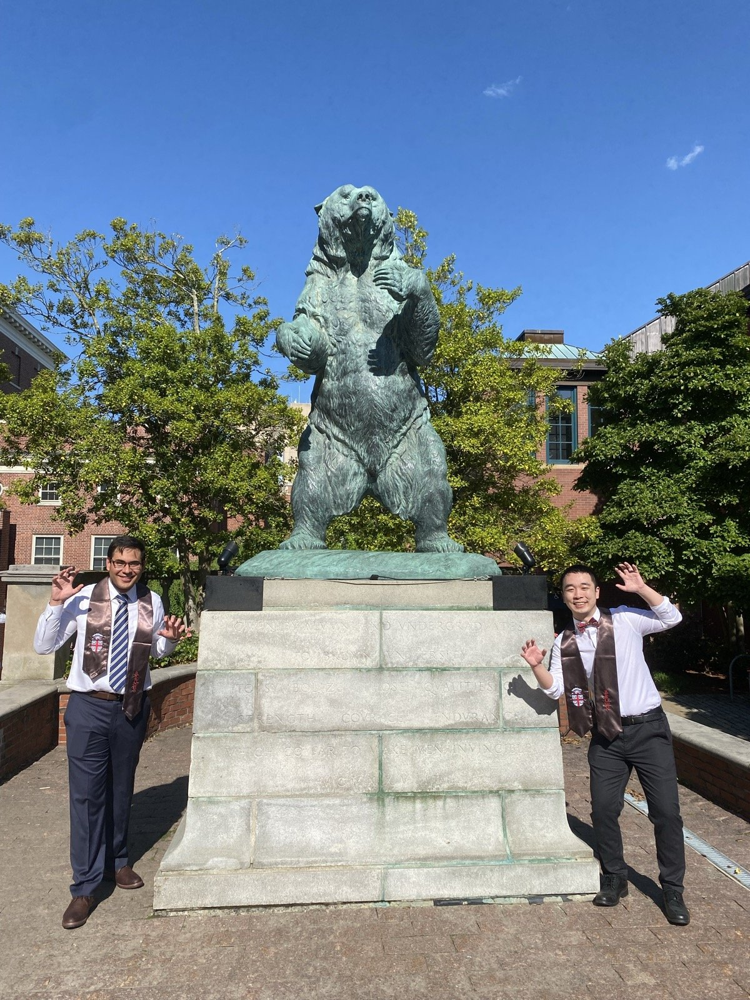
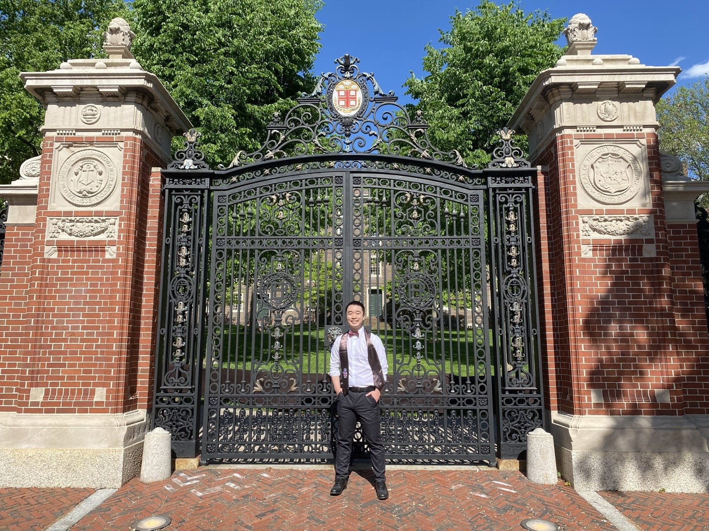
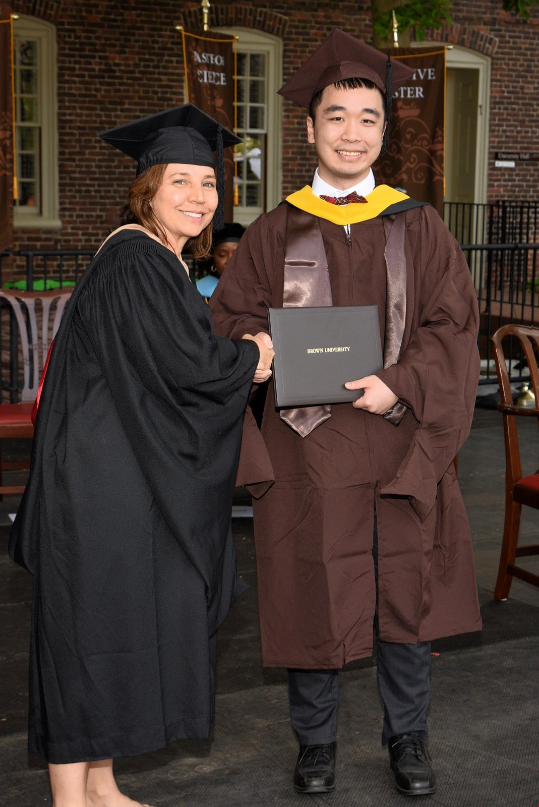

Graduated from Brown!!!
Two degrees done. First Vandy, now Brown. I thought each one would make things clearer, that if I just kept going, kept hitting the next milestone, I'd eventually arrive somewhere and know it. Providence is a beautiful city, and it gave me more than I expected. I spent my time doing research in applied cryptography and ended up with a top-tier publication lined up, which still feels surreal. I made some good friends, though not as many as I did at Vandy, but that's just the graduate student life. It's different. And honestly, a lot of my time went to playing League of Legends and scrolling Twitter. Not exactly what you'd put on a resume, but it's the truth.
But there were stretches where I had no idea what I was doing with my life. Like, full-on questioning everything. I had a PhD program in mind, figured that would be the next step, the thing that kept the path going. It didn't work out. So now I'm standing at graduation for the second time, and for the first time there's nothing lined up after it. Everyone says congratulations, and I smile, but mostly I just feel the weight of a question I've been putting off: what now?


